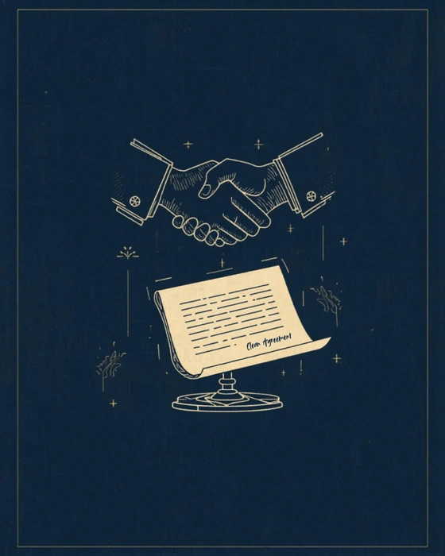
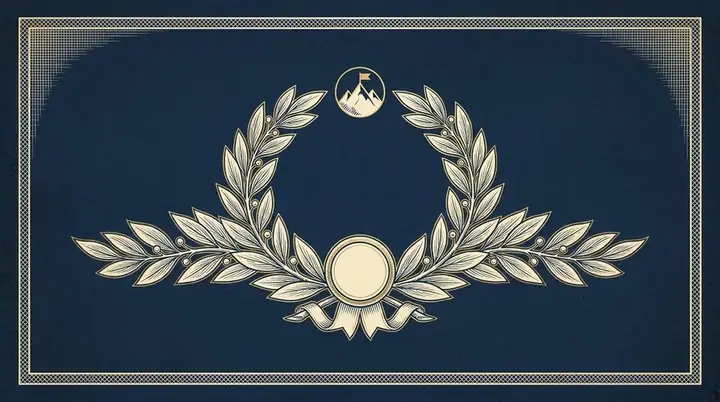
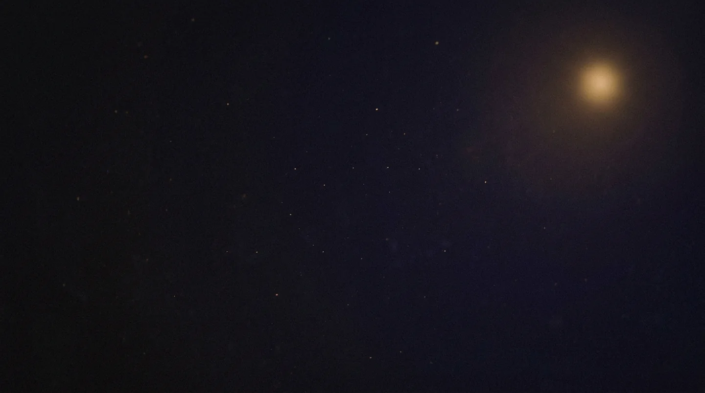

Habla inglés con confianza real, no solo en teoría.
Desde el primer «hello» hasta tu certificación internacional. Método comunicativo, profesores reales y un plan que se adapta a tu nivel y a tu meta profesional.
Gratis · sin registro · 15 minutos · resultado al instante
Aprendes hablando, desde el día uno.
Nada de clases donde el profesor habla y tú tomas notas. Aquí el 80 % del tiempo hablas tú.
Método comunicativo
Situaciones reales desde la primera sesión: pides, negocias, explicas y discrepas. La gramática aparece cuando la necesitas, no antes.
Oído entrenado
Audio en cada lección con voces y acentos distintos. Dejas de entender «el inglés del salón» y empiezas a entender el inglés del mundo.
Tu nivel, medido
Empiezas con un diagnóstico y avanzas por la escala MCER con evidencia. Siempre sabes en qué nivel estás y qué falta para el siguiente.
Inglés que se usa
Entrevistas, juntas, correos y presentaciones. Practicas el inglés que tu trabajo te va a pedir el lunes, no el de un libro de texto.
Progreso que se mide, no que se promete.
Es lo que tarda el examen diagnóstico en decirte tu nivel exacto.
Del tiempo de clase lo ocupas hablando tú, no escuchando.
La escala completa del MCER, sin saltarte peldaños ni inventarlos.
De principiante absoluto a dominio total.
Cinco peldaños del Marco Común Europeo. No te saltas ninguno, y en cada uno sabes exactamente qué tienes que poder hacer para pasar al siguiente.
-
Peldaño 01 · A1
Principiante
Empiezas desde cero real. Saludas, te presentas, dices de dónde eres y a qué te dedicas, y pides lo básico sin traducir mentalmente cada palabra.
Lo sabes cuando: puedes presentarte y pedir algo en una tienda sin ayuda.
-
Peldaño 02 · A2
Básico
Ya no solo sobrevives: cuentas. Hablas de tu rutina, de lo que hiciste el fin de semana y de lo que vas a hacer, y resuelves un hotel o una cita médica.
Lo sabes cuando: puedes contar lo que hiciste ayer sin trabarte.
-
Peldaño 03 · B1
Intermedio
El punto de inflexión. Sostienes una conversación completa, explicas por qué piensas algo y empiezas a usar inglés en el trabajo sin que sea un suplicio.
Lo sabes cuando: puedes discrepar y explicar tu razón.
-
Peldaño 04 · B2
Intermedio alto
El nivel que piden casi todas las vacantes y casi todas las universidades. Negocias, presentas ante un grupo y sigues una junta al ritmo de los demás.
Lo sabes cuando: puedes llevar una junta entera en inglés.
-
Peldaño 05 · C1–C2
Avanzado y Experto
Dejas de traducir. Matizas, persuades, captas el sarcasmo y el subtexto, y escribes con la precisión que exige un informe o una propuesta seria.
Lo sabes cuando: el idioma deja de ser el tema y solo importa lo que dices.
Así se ve una clase.
Sin misterio: material real, corrección en el momento y una meta clara para los 50 minutos.

Material de la sesión«I would like to discuss about the price before we sign.»
discuss no lleva «about». → discuss the price
«Could we revisit the timeline? It's a bit tight on our side.»
Perfecto. «A bit tight» es exactamente lo que dirías en la junta real.
Un curso para cada meta.
Cuatro caminos con el mismo método. Elige por lo que necesitas conseguir, no por el nivel que crees tener.
Inglés General
La ruta completa, de cero a dominio. Las cuatro destrezas en cada sesión y un salto de nivel medido.
Ver el cursoClub de Conversación
Más de 120 temas para soltar la lengua. Grupos reducidos, sin lectura en voz alta y sin turnos muertos.
Ver el cursoInglés Corporativo
Juntas, negociación, correos y presentaciones. Para equipos y para quien ya trabaja en inglés.
Ver el curso
B1 – C1Certificación
IELTS, Cambridge y TOEFL con estrategia de examen, simulacros cronometrados y meta de banda.
Ver el cursoDe la cocina a la sala de juntas.
Tu título de inglés, con estrategia real.
Preparamos el examen que necesitas, no «inglés en general». La diferencia entre una banda 6 y una banda 8 casi nunca es vocabulario.
- Diagnóstico de banda desde el día uno
Sabes en qué banda estás antes de empezar, y qué te separa de la que necesitas.
- Estrategia por sección, no fuerza bruta
Cada parte del examen tiene su técnica. Se entrena por separado y se cronometra.
- Simulacros en condiciones reales
Con reloj, sin pausas y con corrección comentada, para que el día del examen no sea la primera vez.
- Speaking con examinador simulado
La parte que más pesa y menos se practica. Aquí se practica todas las semanas.
- Meta típica
- 6.5 – 7.5 banda global
- Formato
- Listening, Reading, Writing y Speaking · 2 h 45 min
- Se entrena
- Task 1 y Task 2 de Writing, y el Speaking en tres partes
- Vigencia
- 2 años
- Meta típica
- B2 First o C1 Advanced
- Formato
- Reading & Use of English, Writing, Listening y Speaking
- Se entrena
- Use of English, que es donde se cae la mayoría
- Vigencia
- No caduca
- Meta típica
- 90 – 105 de 120
- Formato
- Cuatro secciones, todo por computadora · unas 2 h
- Se entrena
- Las tareas integradas: leer, escuchar y luego responder
- Vigencia
- 2 años
Banda 6 contra banda 8
Arrastra para comparar la misma idea escrita en dos bandas.
Many people think that remote work is good. It has advantages and disadvantages. In my opinion, companies should let people work from home because it is better for them.
Remote work is often framed as a perk, but the evidence points elsewhere: firms that adopted it retained staff longer. The case for it rests less on comfort than on retention.
Invierte en tu inglés.
Sin inscripción, sin permanencia y sin material extra que comprar. El precio que ves es el que pagas.
Grupal
$2500 MXN / mes
Grupos reducidos, dos sesiones por semana.
Ver el plan Más popularProfesional 1:1
$250–400 MXN / hora
Clase individual, horario y contenido a tu medida.
Ver el planEspecializados
$3000 MXN / mes
Certificación y corporativo, con meta de examen.
Ver el planPrecios en pesos mexicanos. Facturamos a empresas.
Todo lo que necesitas saber.
¿Necesito saber algo de inglés para empezar?
¿Las clases son en vivo o grabadas?
¿Qué pasa si falto a una clase?
¿Cuánto tardo en subir de nivel?
¿Preparan para IELTS, Cambridge y TOEFL?
¿Facturan a empresas?

Tu primer paso: el examen diagnóstico gratis.
Quince minutos, sin registro y sin compromiso. Sales sabiendo tu nivel y qué curso te toca.
- Haces el diagnóstico
15 minutos, en línea, resultado inmediato.
- Te decimos tu peldaño
Con lo que ya dominas y lo que falta para el siguiente.
- Eliges horario y plan
Grupal o 1:1, según tu meta y tu agenda.
- Primera clase
Hablas inglés desde esa misma sesión.
¿Prefieres que te escribamos?
Déjanos tus datos y te contactamos con una propuesta.